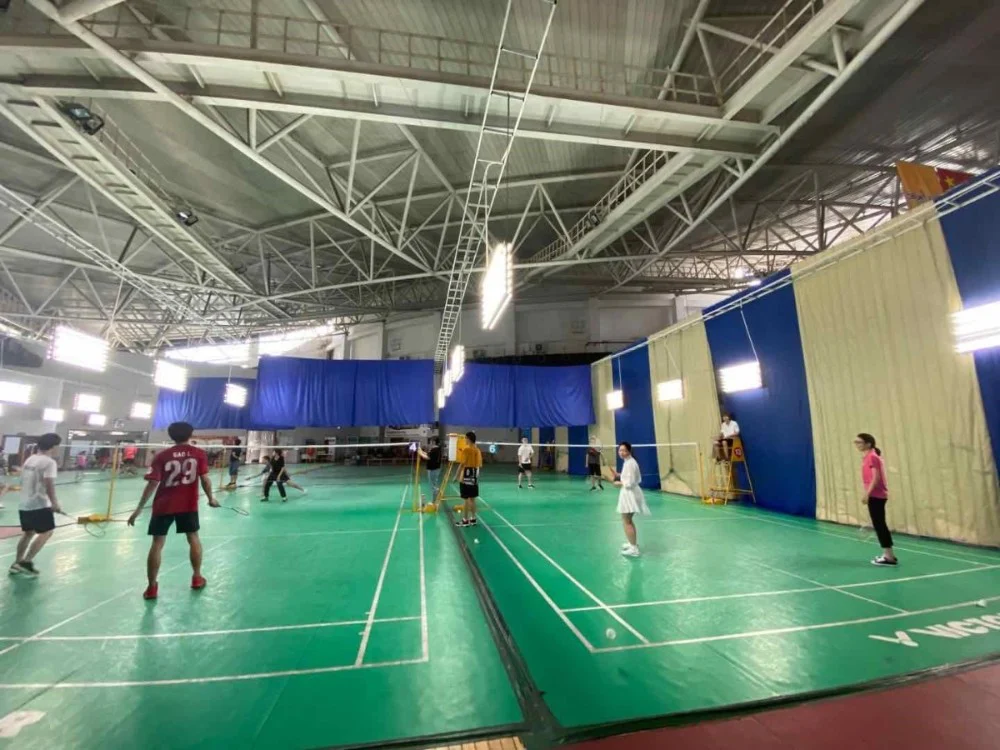
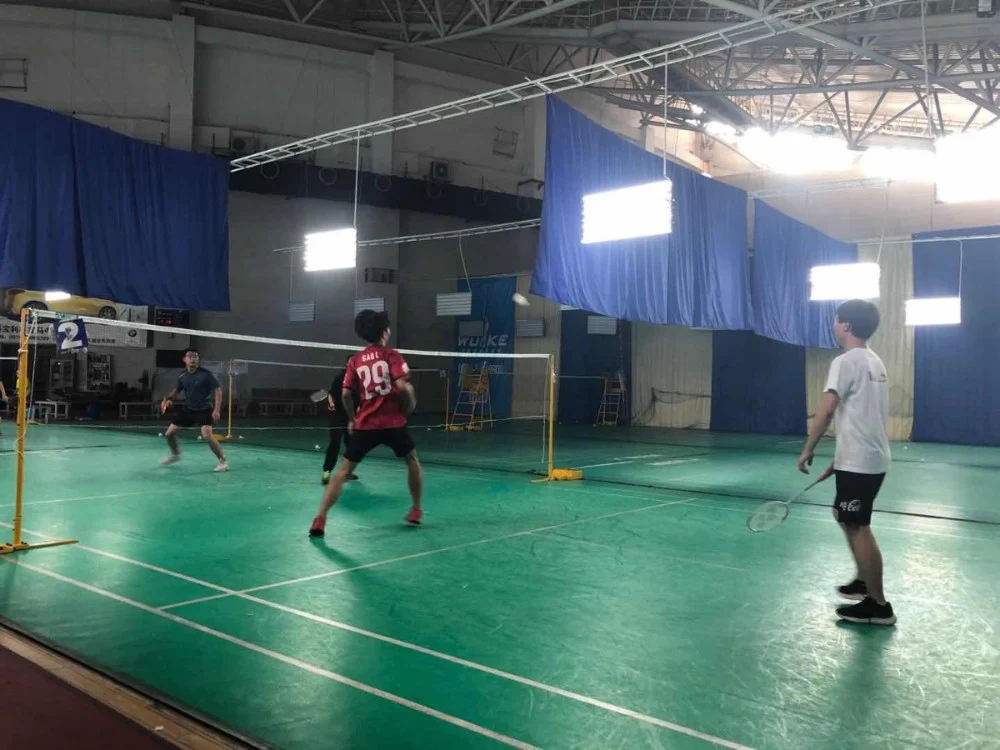
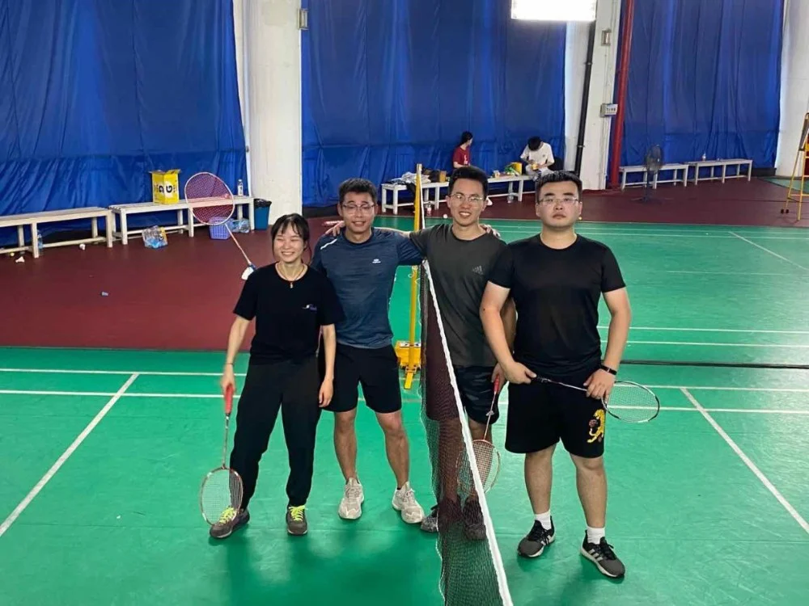
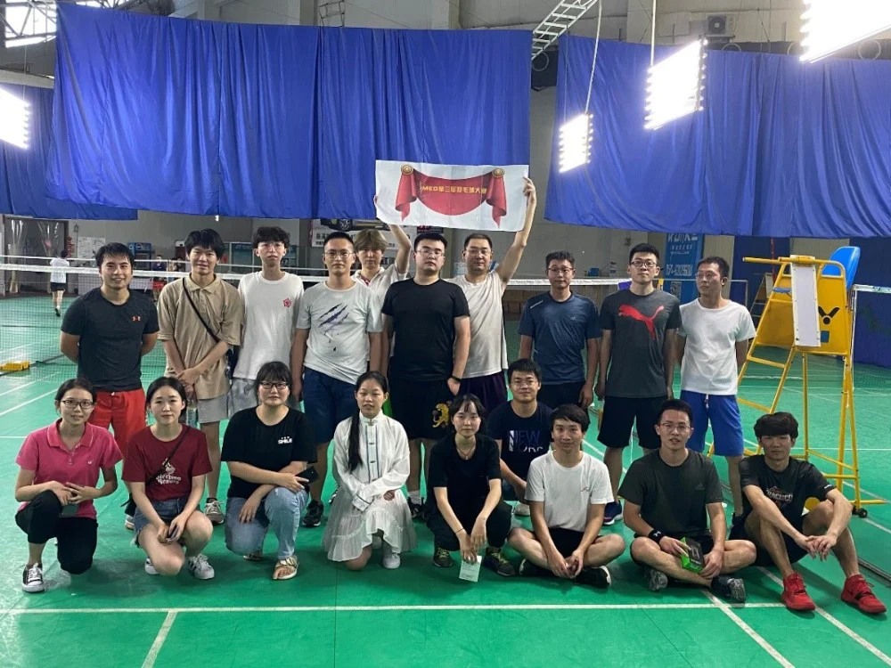

为丰富大家的课余生活，调动同学们的学习积极性，营造 “健康、快乐”的和谐氛围，增强团队凝聚力，提高全体iMED成员的身体素质，陶冶大家的生活情操，增进老师同学之间的团队合作精神，第三届iMED羽毛球比赛在八月十七号正式拉开帷幕。
本次比赛采取混双赛制，大家自由组队。有和室友组成的“两条人”、“一轮游”队，也有巾帼不让须眉的“托瑞斯”队，还有谐音玩梗的“凌凌漆”、“就是GAN”队。
比赛一开始，大家就马上进入战斗状态，选手们火力十足，攻得非常的猛，每个球都很漂亮，直叫场下观看的朋友拍手叫好！

热火朝天的比赛
赛场下，大家既是选手又是啦啦队，喝彩声、欢呼声、加油声此起彼伏。比赛中，紧咬的比分，激烈的气氛，即使落后，仍每球必争，不轻易放弃，坚持到最后一分钟，拼搏到最后一个球。在每一轮比赛结束的同时，场上对战的球员也不忘互相握手相互鼓励，增进友谊。

紧张激烈的比赛
夕阳西下，比赛在决出冠亚军后正式结束，选手们打的酣畅淋漓，观战的也是大饱眼福，活动在轻松愉快的颁奖环节后结束，选手们尽兴而归，斩获了荣誉，收获了友谊。冠军虽然只有一个，但参赛者并不意味着一无所获。展示自我，激发潜力，能够不断超越体力与意志的极限，拥有从容面对失败，绝不放弃的精神，这比胜利更有价值。

决赛前合影
iMED羽毛球比赛不仅提供了一个相互交流、切磋球技、展示自我的机会，也展现了iMED人饱满的精神风貌和团队精神，更为大家的工作生活注入了新的活力！

比赛后大合影